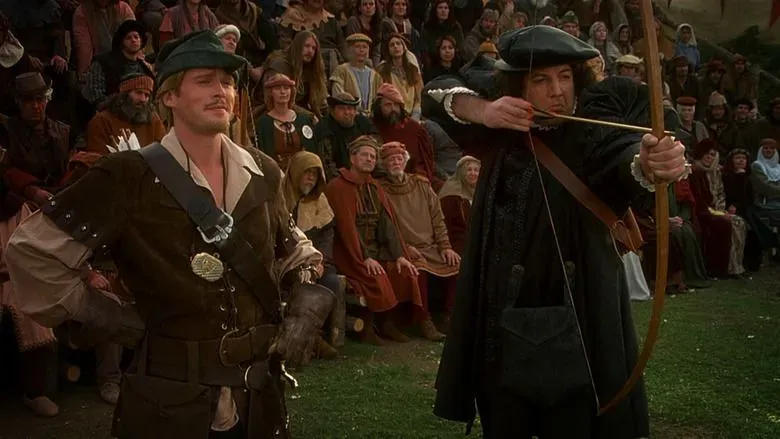

Four Frame Tournaments Create Value
October 1, 2025

Every organization runs four parallel tournaments under one construct, each governed by its own rules and currencies. These are social tournaments shaped by what organizational theory calls frames: ways of viewing and interacting with reality.
The Four Tournaments
Each tournament represents a different frame with its own form of competition and reward:
- Structural Frame Tournament: Technical excellence wins. Currency: working code or functional deliverables.
- Political Frame Tournament: Territory control wins. Currency: information asymmetry and influence.
- Human Resources Frame Tournament: Relationship capital wins. Currency: loyalty and emotional signals.
- Symbolic Frame Tournament: Meaning and narrative control wins. Currency: storytelling power and cultural influence.
Each promotion or shift in role is like moving between these tournaments. A chess player suddenly playing poker with chess pieces. The rules change, the strategies change, and what counts as a win changes.
Information Asymmetry Arbitrage
Frames don't just coexist. They create information asymmetries. Each frame blinds its players to the realities perceived by participants in the other frames (Goffman, 1974). An engineer can't see the political games around them. A politician can't grasp the technical depth beneath decision-making.
Jensen and Meckling showed that 5-20% of organizational value gets lost through information asymmetry between agents and principals. But that value isn't destroyed. It's harvested by middle managers who translate between the blind spots. Middle management exists to bridge otherwise isolated tournaments.
Frame Conflicts Fossilize
Conway's Law is not merely the mirroring of organizational structure in software design. It is bidirectional: software architecture is the fossilized remains of unresolved frame conflicts. That boundary between microservices? It marks where political and technical frames clashed and neither yielded. The legacy monolith? A battle where symbolic meaning preservation defeated technical advancement.
MacCormack et al. found correlations as high as 0.85 between organizational structure and software architecture. You can carbon-date frame disputes in the codebase. The architecture is not a product of design but a monument to ongoing organizational tournament interplay.
Frame Blindness is Instrumental
The system depends on frame blindness. Promotion triggers a 35-50% drop in mirror neuron activity among newly promoted executives, reducing empathy and social resonance. This neurological shift enforces myopia. Promotions tune leaders to focus deeper into a single frame.
The construct remains stable because its participants can't see across frames. And the ones who can see across frames are the ones capturing value at the boundaries.